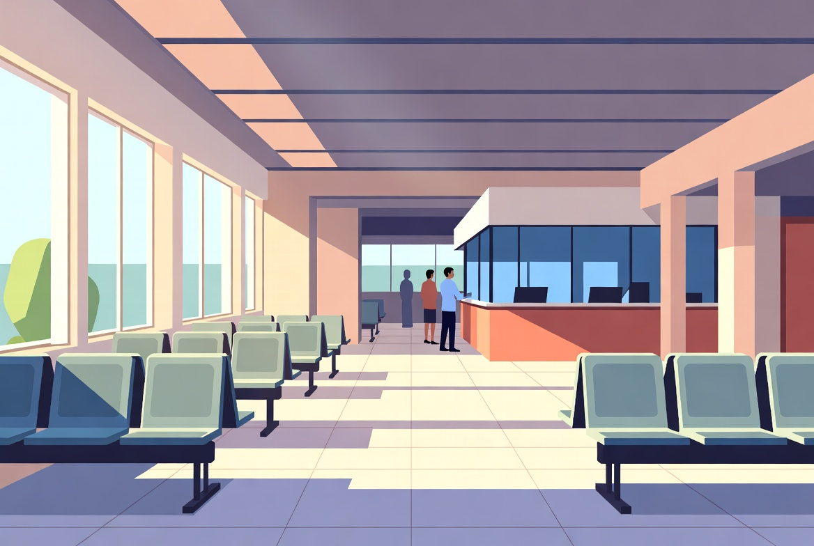

Guten Tag. Ich möchte einchecken.
Bom dia. Gostaria de fazer check-in.
Nesta aula você vai aprender a fazer check-in e localizar o embarque.
 Lektion 18
Lektion 18Ouça a conversa completa e acompanhe a tradução em português.



Aprenda cada expressão como um bloco completo.
Bom dia. Gostaria de fazer check-in.
Posso ver seu passaporte?
Sim, aqui está.
Tem bagagem?
Sim, uma mala.
Seu portão é o número doze.
Ich möchte einchecken diz o que você quer fazer: 'gostaria de fazer check-in'. Einchecken é separável, mas depois de möchte fica inteiro no fim: möchte einchecken.
Ich möchte einchecken diz o que você quer fazer: 'gostaria de fazer check-in'. Einchecken é separável, mas depois de möchte fica inteiro no fim: möchte einchecken.
O alemão fica visível; a explicação ajuda você a entender como usar.
Muitos termos de aeroporto vêm do inglês, o que ajuda o iniciante.
Agora vamos ampliar o vocabulário sobre no aeroporto: check-in e embarque.
Agora uma dúvida sobre o horário do embarque e a pontualidade do voo.
Você chega ao balcão. Diga em voz alta que quer fazer check-in com
Escolha a tradução correta e confira na hora.